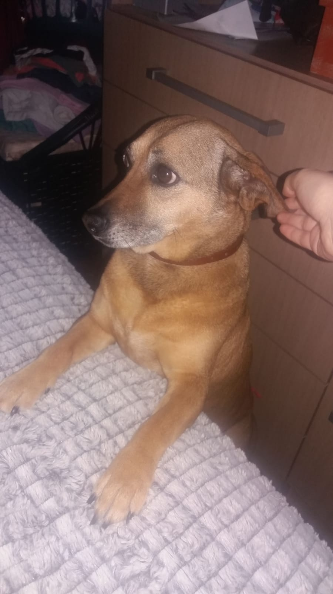

Sofia
Sofia, ou "Gorda" para os íntimos, foi abandonada em frente ao portão de nossa casa ainda filhote.
Nós a acolhemos na intenção de ajudá-la a encontrar um bom lar onde fosse amada e feliz. Entretanto, acabamos nos apegando em seu jeito meigo e carinhoso, e ficamos com ela.
Sempre se mostrando dócil, nunca deu trabalho e sendo uma parceira inseparável dos outros cachorros da casa. Hoje, ano de 2023, já é uma senhora de mais ou menos 12 anos de idade.
Mas foi em 2020, ano em que estourou a pandemia da COVID-19, que ela nos deu o maior dos sustos. Achamos que iríamos perdê-la. Não comia, só ficava deitada, não deixava que encostássemos sem reclamar de dor...
Mas,felizmente, foi somente um susto, e hoje ela corre na praça perto de casa junto das companheiras de caminhada Mel, Fumaça, Eva e Juliete. A nossa velhinha amada.
- 